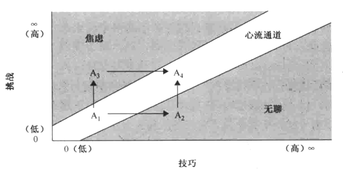

体验在玩家脑中
建模
掌握我们的精神模型，有一种办法，就是寻找那些“不加细想，都感觉很自然”的事物。
专注
大脑理解世界，有一项关键技巧，选择性地集中注意力————忽略一些事物，对另一些事物投入更多精神能量。
在任意一个时刻，我们专注的内容都是由潜意识的欲望和清醒的意志共同决定的。
创作游戏时，我们的目的是创造有趣的体验，足以令玩家尽可能长久而强烈地集中注意力。当一件事情长期吸引我们全部的注意和想象力，人就进入了一种有趣的精神状态：周围的世界似乎疏远了，心中没有任何杂念———心流。
想要在活动中令玩家进入心流状态，要达成以下关键点：
目标清晰：人有清晰的目标，才更容易集中精力于任务；目标不明确时，因为无法确定当前的动作是否有效，也就不那么沉浸在任务中。
没有干扰：无须思考的低技术劳动会令思绪漫游；枯坐思考会让双手无事可做。
反馈直接：每次行动后都要等待一段时间才能知道效果，人很快就会分心，不再专注于手中的任务；反馈及时，人就易于保持专注。
持续挑战：人类喜爱挑战，并喜爱感觉可以完成的挑战。挑战过于简单，也会感觉无聊。随着玩家技巧进步，你也必须拿出相应的挑战。

人长期以同一水准做同一件事，不会觉得享受，只会渐感无聊或失败。
21号透镜：心流
- 我的游戏有清晰的目标吗？如果没有，怎样改好？
- 玩家目标和我所希望的一致吗？
- 游戏中是否有令玩家分心，以致忘记目标的部分？若有，能否减少这些干扰，或能否融入游戏目标内？
- 我的游戏是否稳定提供连串不太容易，也不太难的挑战？有没有考虑到玩家的技巧可能逐步提高？
- 玩家的技巧提高的速率和我的期望相符吗？若不是，应该怎样改进？
一旦发现你的游戏中有玩家进入心流，需要看仔细————他们不会永远处于心流，务必要注意关键的时刻————可能某事发生，玩家就离开心流了。
共情
游戏就是解决问题，情感投射是解决问题的好方法。
想象
想象力有两个重要功能：一是交流（一般用于讲故事）；二是解决问题。游戏设计师必须理解怎样让玩家的想象力助力故事，还要清楚想象力能解决、不能解决的问题。